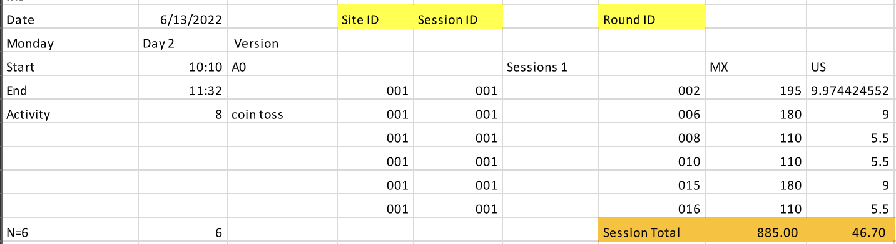
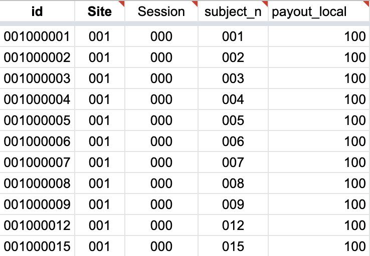

4 Tidy Data
Tidy data is a standard way of structuring a dataset to streamline its usability. This standard, as popularized by Hadley Wickham (Wickham 2014), depends on the organization of rows, columns, and tables, and how they correspond to observations, variables, and types.
In the context of Tidy Data:
Each variable is represented by a column.
Each observation is represented by a row.
-
Each type of observational unit is represented by a table.
What changes put it in a column
Data commonly takes two formats: wide and long.
Wide data, also referred to as unstacked data, is structured so that each row represents an individual unit of observation, and each column represents a variable. This format is often employed when the number of variables is relatively small, and they don’t share hierarchical relationships. This format is common in reports, where its readability excels. A notable example of wide data is a panel where columns correspond to years Table tbl-widepanel.
In contrast, long data, also known as stacked data, is organized so that each row represents a single observation of a variable, with columns representing the variable and the unit of observation identifier. This format is usually employed when the number of variables is large or they are hierarchically related. You’ll often find that working with long data is much more manageable for conducting analyses.
Table 4.1: Panel Data
| Country | 2020 | 2021 |
|---|---|---|
| USA | 329.5 | 331.9 |
| Russia | 144.1 | 143.4 |
| Mexico | 126 | 126.7 |
| Country | Year | Population |
|---|---|---|
| USA | 2020 | 329.5 |
| Russia | 2020 | 144.1 |
| Mexico | 2020 | 126 |
| USA | 2021 | 331.9 |
| Russia | 2021 | 143.4 |
| Mexico | 2021 | 126.7 |
From the first example, one might think that long and tidy data are synonyms. Let’s consider another example where we wish to make our data wider. In Table tbl-across2, each observation—which comprises a country, its population, and birth rate—is spread across two rows. In this case, we aim to widen our data.
Table 4.2: Messy Long
| Country | Name | Value |
|---|---|---|
| USA | Population | 329.5 |
| Russia | Population | 144.1 |
| Mexico | Population | 126 |
| USA | Birth Rate | 1.64 |
| Russia | Birth Rate | 1.5 |
| Mexico | Birth Rate | 1.9 |
| Country | Population | Birth Rate |
|---|---|---|
| USA | 329.5 | 1.64 |
| Russia | 144.1 | 1.5 |
| Mexico | 126 | 1.9 |
Another common issue with messy data occurs when two variables are combined into one column, as seen in Table tbl-gathered, where ‘Year’ and ‘Population’ are in the same column. These need to be separated into two distinct columns: ‘Year’ and ‘Population’.
Table 4.3: Separate Data
| Country | Year/Population |
|---|---|
| USA | 2020/329.5 |
| Russia | 2020/144.1 |
| Mexico | 2020/126 |
| USA | 2021/331.9 |
| Russia | 2021/143.4 |
| Mexico | 2021/126.7 |
| Country | Year | Population |
|---|---|---|
| USA | 2020 | 329.5 |
| Russia | 2020 | 144.1 |
| Mexico | 2020 | 126 |
| USA | 2021 | 331.9 |
| Russia | 2021 | 143.4 |
| Mexico | 2021 | 126.7 |
4.1 Example
Tidy data is more than a theoretical concept; it has practical implications for data structuring. Consider this example of storing data on experiment payments:

When a computer reads this data, it can’t understand our intent, so all columns are read as-is. Adding multiple days necessitates creating similar tables, increasing the chances of errors. Want a total for the entire experiment? We’d have to manually sum all cells. Now, compare this to:

In this format, data input is straightforward, and generating summary tables is as simple as creating a pivot table. A tidy data approach from the outset aids in creating robust tables and saves time during analysis.
4.2 pivot_longer()
A common problem arises in datasets where column names are not variable names, but values of a variable. This is the case for pr_correct, tr_correct, ch_correct, where the column names represent the game variable’s name. Meanwhile, the values in the columns represent the number of correct answers, and each row denotes two observations, not one.
(data_raven <- readr::read_csv("https://raw.githubusercontent.com/nikitoshina/ECON-623-Lab-2023/main/data/mexico_sample_data.csv?token=GHSAT0AAAAAAB5WTPULI26TZP545VNUFQE6Y6O4XVA") %>% select(id, mean_temp_celsius, gender, pr_correct, tr_correct, ch_tournament, ch_correct))# A tibble: 114 × 7
id mean_temp_celsius gender pr_correct tr_correct ch_tournament ch_correct
<chr> <dbl> <chr> <dbl> <dbl> <dbl> <dbl>
1 0010… 28.6 Female 7 3 1 9
2 0010… 28.6 Male 5 6 0 4
3 0010… 28.6 Male 6 7 0 7
4 0010… 28.6 Male 1 5 1 7
5 0010… 28.6 Male 7 9 1 10
6 0010… 28.6 Female 2 7 0 5
7 0010… 28.6 Female 6 6 0 7
8 0010… 28.6 Female 7 7 0 6
9 0010… 30.7 Female 5 4 0 4
10 0010… 30.7 Male 6 7 1 4
# ℹ 104 more rowsTo tidy such a dataset, we need to pivot the problematic columns into a new pair of variables. This operation requires:
- The columns whose names are values, not variables—columns we want to pivot. In this case,
pr_correct,tr_correct,ch_correct. - The name of the variable where we’ll move the column names. Here, it’s
game. The default isname. - The name of the variable where we’ll move the column values. Here, it’s
n_correct. The default isvalue.
data_raven %>%
pivot_longer(c(pr_correct, tr_correct, ch_correct), names_to = "game", values_to = "n_correct") %>%
select(id, game, n_correct) %>%
head(n = 5)# A tibble: 5 × 3
id game n_correct
<chr> <chr> <dbl>
1 001018001 pr_correct 7
2 001018001 tr_correct 3
3 001018001 ch_correct 9
4 001018002 pr_correct 5
5 001018002 tr_correct 6
4.3 pivot_wider()
pivot_wider() is the opposite of pivot_longer(). It is used when an observation is scattered across multiple rows. For instance, consider the data_raven_accident dataset, where mean_temp_celsius and ch_tournament are stacked. In this case, an observation is spread across two rows.
data_raven_accident %>% head(n = 5)# A tibble: 5 × 3
id name value
<chr> <chr> <dbl>
1 001018001 mean_temp_celsius 28.6
2 001018001 ch_tournament 1
3 001018002 mean_temp_celsius 28.6
4 001018002 ch_tournament 0
5 001018005 mean_temp_celsius 28.6To tidy this up, we need two parameters:
- The column to take variable names from. Here, it’s
name. - The column to take values from. Here it’s
value.
data_raven_accident %>%
pivot_wider(names_from = name, values_from = value) %>%
head(n = 5)# A tibble: 5 × 3
id mean_temp_celsius ch_tournament
<chr> <dbl> <dbl>
1 001018001 28.6 1
2 001018002 28.6 0
3 001018005 28.6 0
4 001018009 28.6 1
5 001018010 28.6 1It is evident from their names that pivot_wider() and pivot_longer() are inverse functions. pivot_longer() converts wide tables to a longer and narrower format, while pivot_wider() converts long tables to a shorter and wider format.
4.4 separate() and unite()
Sometimes, data may come with columns united, necessitating us to separate() them to maintain tidy data. The original function was superseded in favor of separate_wider_position() and separate_wider_delim(), there is also separate_longer_*() version.
data_raven_sep %>% head(n = 5)# A tibble: 5 × 2
id `gender/pr_correct`
<chr> <chr>
1 001018001 Female/7
2 001018002 Male/5
3 001018005 Male/6
4 001018009 Male/1
5 001018010 Male/7 data_raven_sep %>%
separate_wider_delim(col = "gender/pr_correct", delim = "/", names = c("gender", "pr_correct")) %>%
head(n = 5)# A tibble: 5 × 3
id gender pr_correct
<chr> <chr> <chr>
1 001018001 Female 7
2 001018002 Male 5
3 001018005 Male 6
4 001018009 Male 1
5 001018010 Male 7 What if we have one column that has been split across multiple columns? Consider a situation where our subject ID code, composed of site_id, session_n, and subject_n, has been broken down into three separate columns. In such a scenario, we would need to unite() these columns back into one.
data_raven_uni %>% head(n = 5)# A tibble: 5 × 4
site_id session_n subject_n gender
<chr> <chr> <chr> <chr>
1 001 018 001 Female
2 001 018 002 Male
3 001 018 005 Male
4 001 018 009 Male
5 001 018 010 Male
4.5 tibble() and tribble()
A tibble is a special kind of data frame in R. Tibbles are a modern re-imagining of the data frame, designed to be more friendly and consistent than traditional data frames. To create a tibble, we can use tibble(), similar to data.frame(). Here are some features that make tibbles unique:
By default, tibbles display only the first 10 rows when printed, making them easier to work with large datasets.
They use a consistent printing format, making it easier to work with multiple tibbles in the same session.
Tibbles have a consistent subsetting behavior, making it easier to select columns by name. When printed, the data type of each column is specified.
Subsetting a tibble will always return a tibble, so you don’t need to use
drop = FALSE, as you would with traditional data frames.Most importantly, tibbles can have columns that consist of lists.
In summary, Tibbles are a more modern and consistent version of data frames. They are less prone to errors and more readable, making them an excellent choice for data manipulation and exploration tasks.
# A tibble: 3 × 2
x y
<dbl> <chr>
1 1 one
2 2 two
3 3 threeYou can also use tribble() to create a row-wise, readable tibble in R. This is especially useful when creating small tables of data. The syntax is as follows: tribble(~column1, ~column2), where the Row column — represents the data in a row by row layout.
tribble(
~x, ~y,
1, "one",
2, "two",
3, "three"
)# A tibble: 3 × 2
x y
<dbl> <chr>
1 1 one
2 2 two
3 3 three
4.6 janitor: Clean Your Data
The janitor package is designed to make the process of cleaning and tidying data as simple and efficient as possible. To learn more about the functions it provides, check out this vignette!
4.6.1 clean_names()
The clean_names() function is used to clean variable names, especially those read in from Excel files using readxl::read_excel() and readr::read_csv(). It parses letter cases, separators, and special characters into a consistent format, converts certain characters like “%” to “percent” and “#” to “number” to retain meaning, and resolves issues of duplicate or empty names. It is recommended to call this function every time data is read.
# Create a data.frame with dirty names
test_df <- as.data.frame(matrix(ncol = 6))
names(test_df) <- c(
"camelCase", "ábc@!*", "% of respondents (2009)",
"Duplicate", "Duplicate", ""
)
test_df %>% colnames()[1] "camelCase" "ábc@!*"
[3] "% of respondents (2009)" "Duplicate"
[5] "Duplicate" ""
4.6.2 remove_empty()
remove_empty() removes empty rows and columns, which is especially useful after reading Excel files.
test_df2 <- data.frame(
numbers = c(1, NA, 3),
food = c(NA, NA, NA),
letters = c("a", NA, "c")
)
test_df2 numbers food letters
1 1 NA a
2 NA NA <NA>
3 3 NA ctest_df2 %>%
remove_empty(c("rows", "cols")) numbers letters
1 1 a
3 3 c
4.6.3 remove_constant()
remove_constant() drops columns from a data.frame that contain only a single constant value (with an na.rm option to control whether NAs should be considered as different values from the constant).
test_df3 <- data.frame(cool_numbers = 1:3, boring = "the same")
test_df3 cool_numbers boring
1 1 the same
2 2 the same
3 3 the sametest_df3 %>% remove_constant() cool_numbers
1 1
2 2
3 3
4.6.4 convert_to_date() and convert_to_datetime()
Do you remember loading data from Excel and seeing 36922.75 instead of dates? Well, convert_to_date() and convert_to_datetime() will convert this format and other date-time formats to actual dates! If you need more customization, check excel_numeric_to_date().
convert_to_date(36922.75)[1] "2001-01-31"convert_to_datetime(36922.75)[1] "2001-01-31 18:00:00 UTC"
4.6.5 row_to_names()
row_to_names() is a function that takes the names of variables stored in a row of a data frame and makes them the column names of the data frame. It can also remove the row that contained the names, and any rows above it, if desired.
test_df4 <- data.frame(
x_1 = c(NA, "Names", 1:3),
x_2 = c(NA, "Value", 4:6)
)
test_df4 x_1 x_2
1 <NA> <NA>
2 Names Value
3 1 4
4 2 5
5 3 6row_to_names(test_df4, 2) Names Value
3 1 4
4 2 5
5 3 64.7 Summary
This chapter introduced the concept of tidy data, focusing on its structured format where each variable corresponds to a column, each observation to a row, and each observational unit type to a table. We highlighted the distinctions between wide and long data formats, and delved into practical R tools for organizing data into this tidy structure, including an overview of tibbles and additional resources for data cleaning. Understanding these principles of tidy data is invaluable and will prove beneficial throughout your career. Next, we will shift our focus to relational data and the concept of joins!